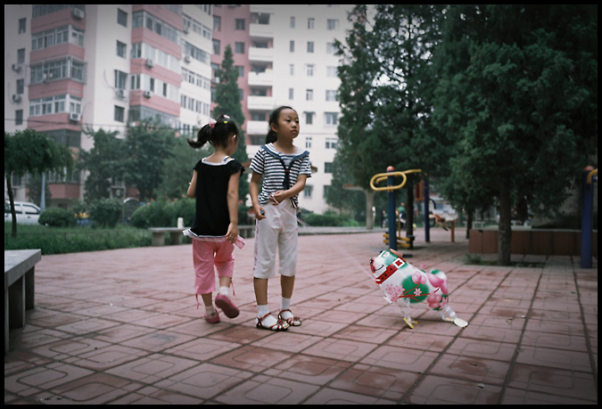

柒郎2014-01-18 22:383 分
性价比 3.00色彩还原 3.00分辨率 3.00锐利度 3.00颗粒度 3.00反差 3.00色饱和度 3.00宽容度 3.00倒易率允许 3.00
柒郎2014-01-18 22:35
65152152011-02-18 16:484.83 分
性价比 4.00色彩还原 5.00分辨率 5.00锐利度 5.00颗粒度 5.00反差 5.00色饱和度 5.00宽容度 5.00倒易率允许 4.50
xjtuchine2009-12-17 01:364.17 分
性价比 3.00色彩还原 5.00分辨率 4.50锐利度 4.50颗粒度 4.00反差 4.00色饱和度 5.00宽容度 4.00倒易率允许 3.50
上帝武装2009-08-09 14:444.67 分
性价比 3.00色彩还原 5.00分辨率 5.00锐利度 5.00颗粒度 5.00反差 5.00色饱和度 5.00宽容度 4.50倒易率允许 4.50
古世2008-09-28 17:514.94 分
性价比 4.50色彩还原 5.00分辨率 5.00锐利度 5.00颗粒度 5.00反差 5.00色饱和度 5.00宽容度 5.00倒易率允许 5.00

寄生在城市角落2008-04-24 11:394.78 分
性价比 4.50色彩还原 5.00分辨率 5.00锐利度 5.00颗粒度 5.00反差 4.50色饱和度 4.50宽容度 5.00倒易率允许 4.50
hunter06182008-03-19 05:504.72 分
性价比 4.00色彩还原 5.00分辨率 5.00锐利度 5.00颗粒度 5.00反差 4.00色饱和度 4.50宽容度 5.00倒易率允许 5.00
seafury2008-03-06 14:285 分
性价比 5.00色彩还原 5.00分辨率 5.00锐利度 5.00颗粒度 5.00反差 5.00色饱和度 5.00宽容度 5.00倒易率允许 5.00
ccuk2008-02-03 05:404.33 分
性价比 3.50色彩还原 3.50分辨率 5.00锐利度 5.00颗粒度 5.00反差 3.50色饱和度 5.00宽容度 3.50倒易率允许 5.00